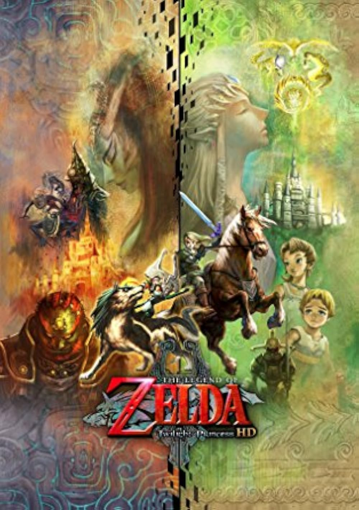
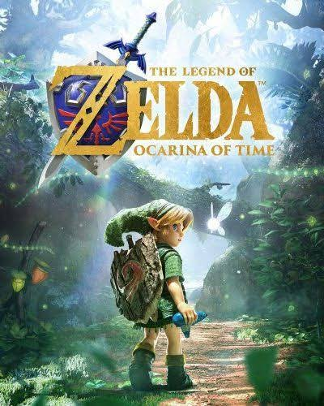
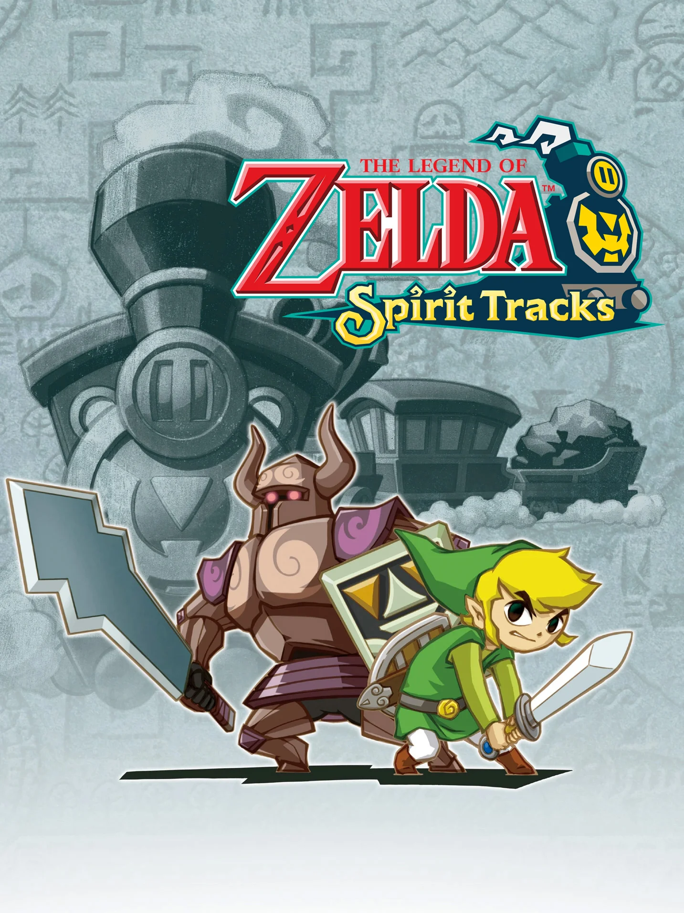
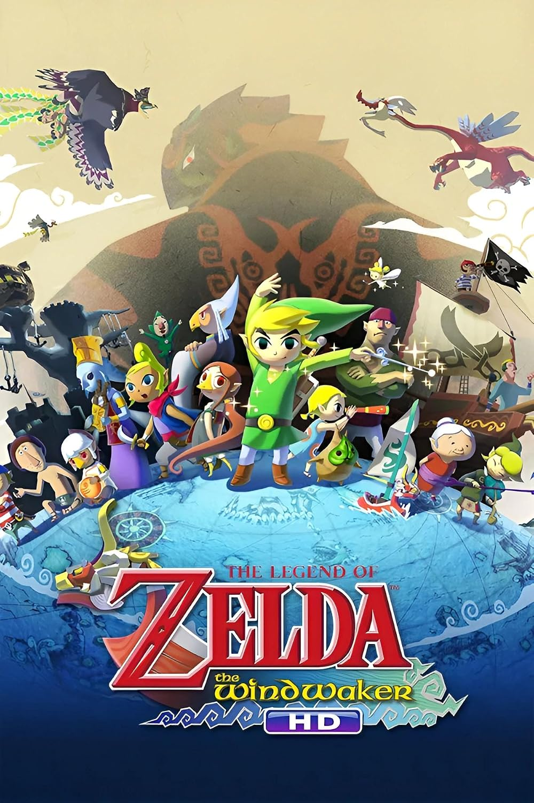
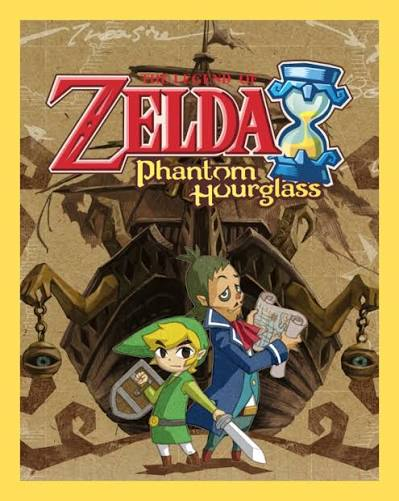

The Legends Of Zelda

Twilight Princess comienza en Ordon, una pequeña aldea situada en las afueras de Hyrule, en la Región de Latoan. En este lugar, un joven llamado Link vive una vida sencilla, trabajando al cuidado del ganado. Un día, Moy propone a Link que le acompañe a la entrega de la Espada de Ordon y Escudo Ordon como regalos para la Familia Real de Hyrule para el Festival de Hyrule. Sin embargo, el mismo día en que se supone que hace la entrega...
Ver mas
Aproximadamente 10 años antes de los acontecimientos de The Legend of Zelda: Ocarina of Time, hubo un conflicto a gran escala conocido como la Guerra Civil de Hyrule. Una mujer que había estado escapando de los estragos de la guerra, logra llegar al Bosque Kokiri, un santuario que impide la entrada a forasteros gracias a la protección del Gran Árbol Deku. La madre, gravemente herida, deja al niño al cuidado del Gran Árbol Deku...
Ver mas
La historia tiene lugar cientos de años después de la muerte de Ganondorf en The Legend of Zelda: Twilight Princess. Comienza con la tierra de Hyrule en un estado de miedo debido a los sucesos extraños que han ocurrido en los últimos días. En una noche de tormenta, la Princesa Zelda y las doncellas del santuario temen que el motivo de estos acontecimientos sea que el sello de Vaati se está debilitando. Se convoca a Link y va al...
Ver mas
Una noche, el héroe Link, recorriendo los mares en busca de una aventura, se encuentra con una fuerte tormenta y naufraga en la Isla Koholint, un paraíso tropical. En la playa de la isla, Link es encontrado inconsciente por una chica joven con el nombre de Marín. Link despierta, confundido, en la casa de Marín y su padre Tarín, que da Link su escudo...
Ver mas
El juego comienza con una nueva encarnación de Link que se encuentra en el día de su ceremonia de graduación, donde recibirá su Título de Maquinista de manos de la mismísima Princesa Zelda, es por eso que viaja hacia el Castillo de Hyrule junto a Bigboy.
Ver mas
El juego comienza contando la historia de una antigua leyenda entre los pueblos del Gran Mar, un vasto océano lleno de muchas islas pequeñas y diferentes razas. Según la leyenda, había una vez un reino próspero donde un omnipotente poder dorado estaba oculto. Un hombre malvado conocido como Ganondorf encontró y robó este poder y lo utilizó para propagar la oscuridad hasta que un joven vestido de verde selló al malvado con una espada capaz de disipar el mal.
Ver mas
La historia de Majora's Mask se establece después de los acontecimientos de Ocarina of Time. Después de la derrota de Ganondorf, Link es enviado de vuelta a su tiempo para que pudiera volver a vivir su infancia. Después de algún tiempo, él emprende un viaje con su caballo, Epona, para encontrar un amigo no identificado que perdió después de su batalla contra el mal. Un efecto sonoro de hada...
Ver mas
Los acontecimientos de A Link Between Worlds se llevan a cabo seis generaciones después de los eventos de A Link to the Past. La leyenda de las batallas del legendario héroe contra Ganon se han transmitido de generación en generación, y la paz ha gobernado en Hyrule durante décadas. La encarnación de Link en el juego es un aprendiz del mejor herrero de todo Hyrule...
Ver mas
Link, siendo enviado desde Hyrule a Labrynna por el poder de la Trifuerza, despierta en dicha tierra, encontrándose con Impa, que es asediada por un grupo de Octoroks. Desconocido por Link, Impa había caído en las garras de la malvada hechicera de las sombras Veran...
Ver mas
Llamado por la Trifuerza, Link viaja al santuario donde se encuentra la reliquia sagrada. Los triángulos sagrados le transportan a un mundo conocido como Holodrum, que está en extrema necesidad de un héroe...
Ver mas
Siglos antes de los acontecimientos del juego, la Diosa Hylia, protectora de la Trifuerza, luchó contra un gran mal que amenaza con destruir el mundo entero. Para proteger a la raza de los seres humanos de ser aniquilados, los envió lejos, por encima de las nubes, elevando la tierra. Junto con el resto de razas del mundo, Hylia combatió las fuerzas malignas oscuras, y finalmente logró sellar el poder maligno. La leyenda de la diosa se transmitió...
Ver mas
Phantom Hourglass es una secuela directa de The Wind Waker y se encuentra varios meses después de los acontecimientos de The Wind Waker. El juego comienza con un recuento de los eventos de The Wind Waker, que termina con Link montado a bordo del Barco Pirata de Tetra. Link, Tetra y sus piratas están en el mar y buscando el Barco Fantasma, del que se rumorea que navega por las aguas de esa zona, secuestrando marineros...
Ver mas